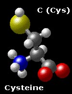
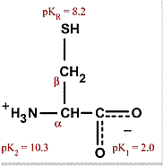

The Biology Project > Biochemistry > The Chemistry of Amino Acids
Cysteine C (Cys)
Chemical Properties:
Sulfur-containingPhysical Properties:
Polar (uncharged)
Cysteine is one of two sulfur-containing amino acids; the other is methionine. Cysteine differs from serine in a single atom-- the sulfur of the thiol replaces the oxygen of the alcohol. The amino acids are, however, much more different in their physical and chemical properties than their similarity might suggest.Consider, for example, the differences between H2O and H2S. The hydrogen bonding propensity of water is well known and is responsible for many of its remarkable features. Under similar conditions of temperature and pressure, however, H2S is a gas as a consequence of its weak H-bonding propensity. Furthermore, the proton of the thiol of cysteine is much more acid than the hydroxylic proton of serine, making the nucleophilic thiol(ate) much more reactive than the hydroxyl of serine.
Cysteine also plays a key role in stabilizing extracellular proteins. Cysteine can react with itself to form an oxidized dimer by formation of a disulfide bond. The environment within a cell is too strongly reducing for disulfides to form, but in the extracellular environment, disulfides can form and play a key role in stabilizing many such proteins, such as the digestive enzymes of the small intestine.
Cysteine and methionine are the only sulfur-containing amino acids.
 
The Biology Project > Biochemistry > The Chemistry of Amino Acids
http://biology.arizona.edu
All contents copyright © 2003. All rights reserved.